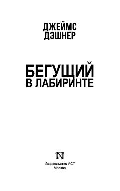

БВXotirasi o'chirilgan o'smirlar sirli Labirintdan chiqish uchun kurashadilar.
Asar xotirasi o'chirilgan va sirli Labirint ichiga tashlab yuborilgan o'smirlar guruhi haqida hikoya qiladi. Bosh qahramon Tomas o'zining kimligini eslashga va do'stlari bilan birga bu dahshatli tajribadan chiqish yo'lini topishga harakat qiladi.